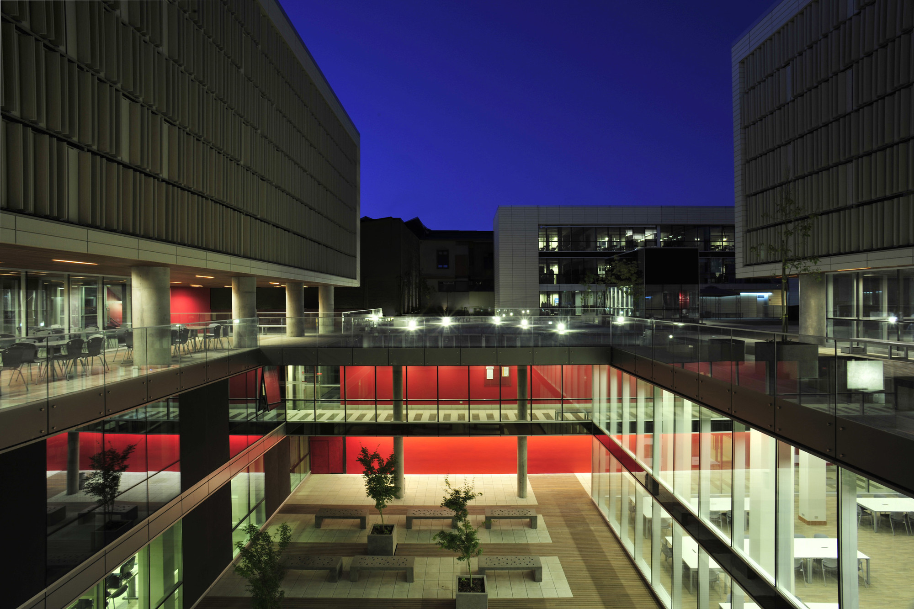

INACAP - Santiago Centro
Mis inicios como Docente Universitario
UTECH INACAP | Duoc UC | IPLACEX
Fundamentos de Programación
En varios semestres dicté esta asignatura, inicialmente solo utilizando DFDs y pseudocódigo, pero después me tocó enseñar esta asignatura utilizando el lenguaje de programación Python.
Programación de Aplicaciones
Me especialicé en hacer clases de programación en Java, PHP y Python. Enseñé a programar en frameworks como Django y Flask en el caso de Python, y Spring y Spring Boot en el caso de Java.
Administración Bases de Datos
Hice clases como instructor certificado en administración de Oracle DB, también me tocó impartir asignaturas de administración en SQL Server 2019 y asignaturas de diseño de bases de datos con MySQL.
Ingeniería de Datos
Actualmente imparto asignaturas relacionadas a Data Engineering para el Campus a Distancia (CED) de IPLACEX donde soy el docente que desarrolló el plan formativo de la asignatura Limpieza y Preparación de Datos - Python.
2024 - Actualidad
Instituto Profesional IPLACEX
Actualmente soy docente instructor en la Escuela de Informática y Tecnologías Aplicadas donde me especializo en hacer clases en el Campus de Educación a Distancia. Las asignaturas que imparto son variadas: desde Programación y Administración de Bases de Datos propias de la Carrera de Ingeniería Informática, hasta Programación y Limpieza de Datos en la Carrera de Ingeniería de Datos.
Ver más información open_in_new2023 - 2024
Instituto Profesional Duoc UC
Fui docente en la Escuela de Informática y Tecnologías Aplicadas donde me centré en hacer clases enfocadas al desarrollo de aplicaciones con Java + MySQL. Trabajé en la Sede - Plaza Vespucio ubicada en La Florida, Santiago.
Ver más información open_in_new2013 - 2020
Universidad Tecnológica de Chile INACAP
Fui docente instructor por 8 años en la Carrera de Ingeniería Informática y Tecnologías Aplicadas donde hice clases en numerosas asignaturas. El 2014 me tocó desarrollar el Examen Final de Competencias (EFC) que era el examen para que los alumnos se pudieran titular como Técnicos Analistas Programadores. Trabajé en la Sede - Santiago Centro y también en la Sede - Curicó.
Ver más información open_in_newDocente Tutor
Fui el mentor y docente guía de alumnos tesistas en algunas ocasiones para cursos de 4° año en la Carrera Ingeniería Informática mientras trabajé en UTECH INACAP.

INACAP - Santiago Centro
Mis inicios como Docente Universitario
Docente Responsable Examen Final de Competencias (Examen de Titulación Técnico Analista Programador) — 2015, UTECH INACAP
Docente Guía Hackaton "Los Genios no Duermen" — 2018, UTECH INACAP